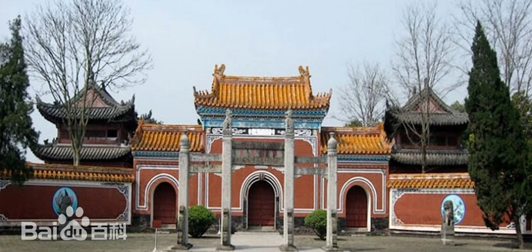
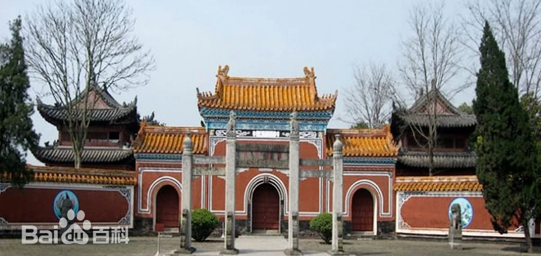
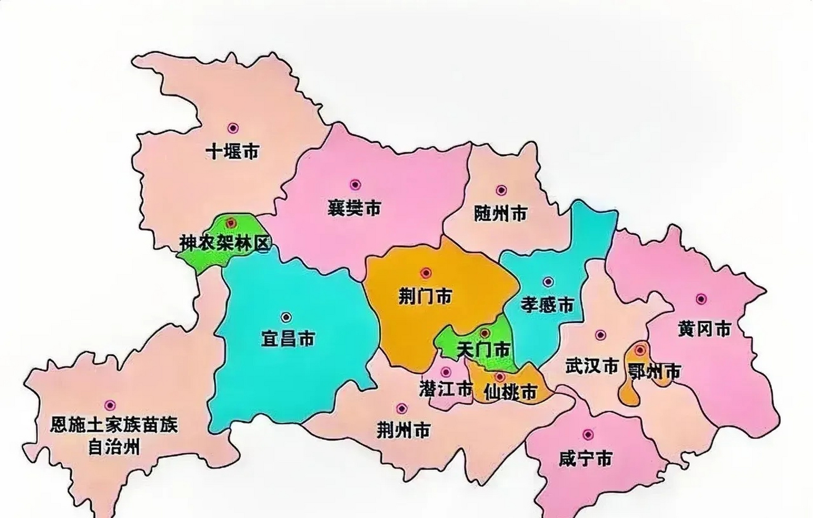

 宜昌古称“夷陵”，因“水至此而夷、山至此而陵”得名。清朝时改称“宜昌”，取“宜于昌盛”之意。 三国时，吴黄武元年（222年），改夷陵为西陵郡，也称宜都郡。晋太康年间（280—289年）， 改置为夷陵县。东晋分夷陵西境（在长江南岸的黄牛岩至黑岩之间）另置一县时命名“宜昌”， 寓意在于祈福分境置县宜于国运昌盛，“宜昌”之名便始见于史。(左图为湖北当阳关陵)
 宜昌古称“夷陵”，因“水至此而夷、山至此而陵”得名。清朝时改称“宜昌”，取“宜于昌盛”之意。 三国时，吴黄武元年（222年），改夷陵为西陵郡，也称宜都郡。晋太康年间（280—289年）， 改置为夷陵县。东晋分夷陵西境（在长江南岸的黄牛岩至黑岩之间）另置一县时命名“宜昌”， 寓意在于祈福分境置县宜于国运昌盛，“宜昌”之名便始见于史。(左图为湖北当阳关陵)
 地理位置上，宜昌市位于湖北省西南部，地处长江上游与中游的结合部、鄂西武陵山脉和秦巴山脉向 江汉平原的过渡地带，是长江上游和中游的分界线，“上控巴蜀，下引荆襄”。东邻荆州市和荆门市，南抵湖南省石门 县，西接恩施土家族苗族自治州，北靠神农架林区和襄阳市，总面积2.1万平方千米。
地形上， 宜昌市地形复杂，高低相差悬殊，海拔从2427米（兴山县仙女山）至35米（枝江市杨林湖） ，垂直高差达2392米，呈现出自西向东逐级下降的态势，形成山地（高山、半高山、低山） 、丘陵和平原等三大基该地貌类型。
气候上，宜昌市位于中亚热带与北亚热带的过渡地带，属亚热带季风性湿润气候。 有四季分明，水热同季，寒旱同季的气候特征。多年平均降水量1215.6毫米。平均气温16.9摄氏度，极端最高温度41.4摄氏度（7月） ，极端最低温度零下9.8摄氏度（元月）。
水文上，宜昌市河流均属长江流域。以长江干流为主脉， 河流多、密度大、水量丰富。宜昌境内流域面积30平方千米以上的河流183条，总长5070千米。 流域面积3000平方千米以上的河流4条（长江、清江、沮漳河、香溪河），境内总长668千米。
三峡大坝，位于湖北省宜昌市夷陵区三斗坪镇三峡坝区三峡大坝旅游区内，地处长江干 流西陵峡河段，三峡水库东端。始建于1994年，集防洪、发电、航运、水资源利用等为 一体，是三峡水电站的主体工程、三峡大坝旅游区的核心景观、当今世界上最大的水利枢纽建筑之一。 三峡大坝主要由挡水泄洪主坝体、发电建筑物、通航建筑物等建筑组成，坝体为混凝土重力坝。 三峡工程发电效益可观，有助于缓解中国能源瓶颈，在构筑能源动脉，优化能源资源配置方面发挥重要作用。
宜昌市三峡人家风景区，位于湖北省宜昌市长江三峡中的西陵峡境内，三峡大坝和葛洲坝之间， 跨越灯影峡两岸，面积276平方千米。宜昌市三峡人家风景区“湾急、石奇、谷幽、洞绝、泉甘”， 它包括龙进溪、天下第四泉、野坡岭、灯影洞、抗战纪念馆、石牌古镇、杨家溪漂流等景区。 2011年，宜昌市 三峡人家风景区被中华人民共和国文化和旅游部评为5A级旅游景区。
百里荒草原风景区， 国家AAAA级旅游景区，位于湖北省宜昌市夷陵区分乡镇，总面积40平方千米， 百里荒在古代因方圆百里荒无人烟而得名。百里荒的历史追踪溯源，最早是由宋代 文宗、时任夷陵县令欧阳修确定的夷陵九个自然景观之一。 百里荒野生动植物品种丰富，享有“中国南方草场”之美 誉。2003年7月，成立宜昌百里荒生态农业旅游开发有限公司，百里荒开发为旅游区。
《宜昌成湖北首个全国文明城市 15年努力终圆梦》(2015)
《人民城市人民建，人民城市为人民——宜昌，迈向中国人居环境示范城市》(2023)
宜昌曾获得过许多荣誉称号，例如“2023年中国人居环境奖”“国家环境保护模范城市”“国家卫生城市”等等， 这些称号共同反映出宜昌这座城市对环境保护的重视。近年来“全国文明城市”的评选，宜昌更是“大显身手”。 上述两篇新闻生动展示了宜昌在成为全国文明城市这件事上所做的长期持久的努力，宜昌真正成为了一座“宜居之城”。